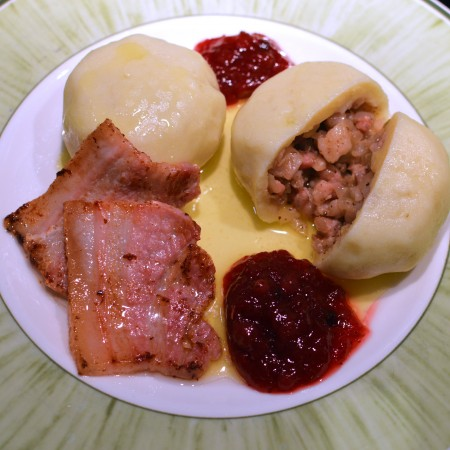

Swedish Meatballs

Background
The direct translation of this traditional Swedish dish “kroppkakor” is “Body cakes” but a better way to describe them is: potato dumplings with pork and onion. There are some regional differences of kroppkakor; “öländska kroppkakor”, “småländska kroppkakor” and “pitepalt”.
This recipe is closest to småländska kroppkakor but uses some extra spices (traditionally it is only salt and allspice). I got inspiration from Ludvig Brydolf in the Swedish MasterChef where he uses Angostura bitters, but I thought it is more common for people to have clove, cardamom and nutmeg at home so why not use those spices that makes up the flavours of Angostura bitters.
Ingridients
Dumplings
- 800 g floury potatoes around 8 medium sized King Edward
- 1 tsp salt
- 2 eggs
- 50 g potato flour 100 ml
- 50 g wheat flour 100 m
Filling
- 400 g pork belly or bacon
- 2 onions
- butter
- ½ tsp whole allspice
- ½ tsp clove
- ½ tsp cardamom
- ½ tsp nutmeg
Step by Step
- Peel the potatoes, cut them in big chunks and boil them.
- While waiting for the potatoes you can cut the onion and pork belly in tiny cubes.
- Fry the pork and onion while at the same time grind the spices (better flavor if you use whole allspices, clove and cardamom)
- Add the spices to the filling and stir it together, keep on low heat
- When the potatoes are boiled, let them cool a bit and then mash them. Wait until you can work the mash with you hands before adding the rest of the ingredients (otherwise the eggs might coagulate)
- Add the eggs, salt, flour and potato flour and stir it to an even mix. Here you'll probably need to adjust the amount of flour to ensure the dough is not too sticky nor too dense.
- Put flour on your working space and on your hands and start scooping out and forming round balls the size of a golfball. Here you'll notice if the dough is too sticky to work with, then just add more flour. Note that the ball will stick to the surface if you don't have flour between
- Next step is to flatten the ball to a disc then place around 2 tablespoons of filling in the middle, fold the dough around and pinch it together so the filling is fully encircled and the doughball is round again
- Use a big pot to boil up water then carefully place the dumplings in the boiling water. They are ready once they float up to the surface
- Serve with some slices of fried pork belly (or bacon), hot butter and raw-stirred lingonberries (just add half the volume of sugar to the fresh lingonberries and stir until the sugar has dissolved)